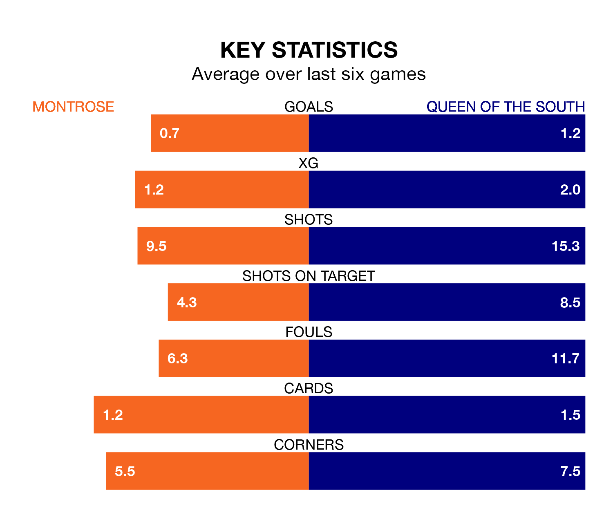

Montrose host Queen of the South in Saturday's match at Links Park looking to bounce back from defeat last time out in League One.
The Gable Endies, who sit fourth in the league after 35 games, fell to a 0-2 away defeat to Kelty Hearts on April 27.
They face a Queen of the South side who picked up a win in their last match, a 2-0 victory against Cove Rangers, and who sit seventh in the table.
With 44 goals in 35 games so far this season, Queen of the South are the league's third-lowest scorers with 1.3 goals per game. But they are conceding fewer than average too, letting in 50 goals at a rate of 1.4 per game.
Montrose, meanwhile, are average scorers, with 1.6 goals per game. They have also conceded 1.6 goals per game.
In the last 10 years, Montrose and Queen of the South have played each other on eight occasions. Montrose won four of them, Queen of the South three, and they drew once.
On average, the Gable Endies scored 1.5 goals and the Doonhamers 2.1 in those matches.
Their last meeting was on February 24, when Montrose won 3-2 away.
The Gable Endies are in bad form in League One, with one win and a draw from their last six games.
With three wins and two draws over that period, the Doonhamers's form is much better – they have taken 11 points from 18, compared to the home team's four.
In Cameron Gill, Montrose can rely on one of the league's safest pair of hands. He has kept six clean sheets in his 34 appearances this season in League One.
In the visitors' net, Harry Stone also has six clean sheets in 23 games.
Updated: 10:44 (UTC), 30/04/24